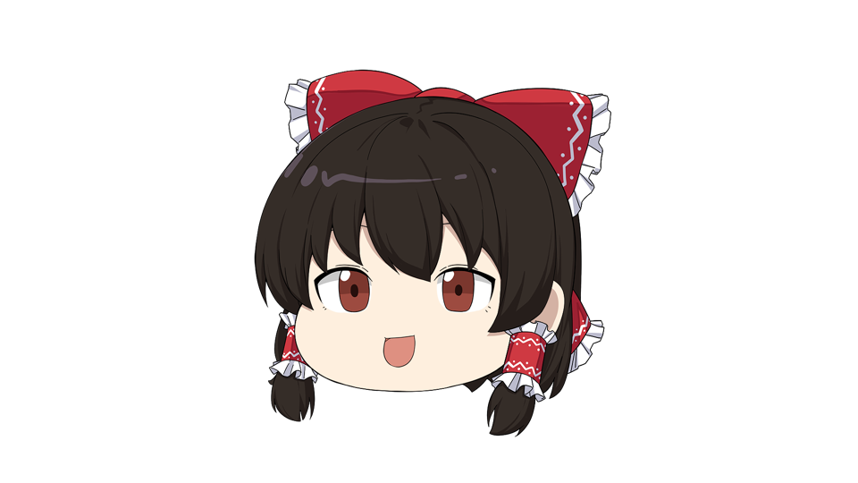
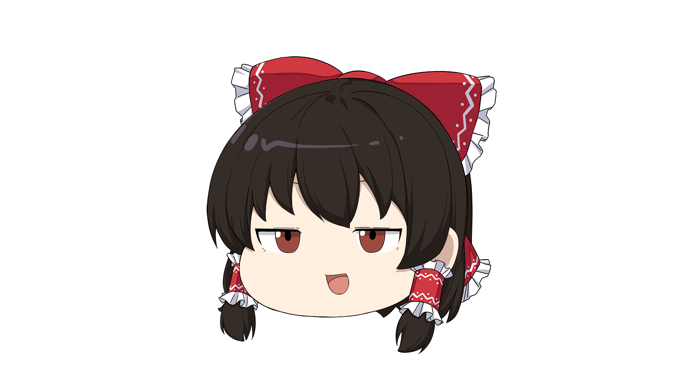
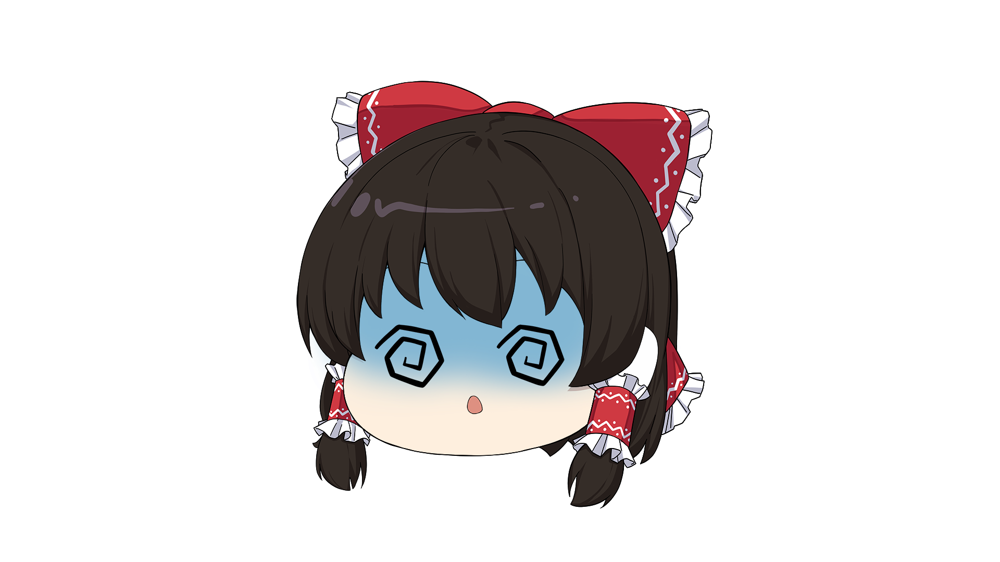
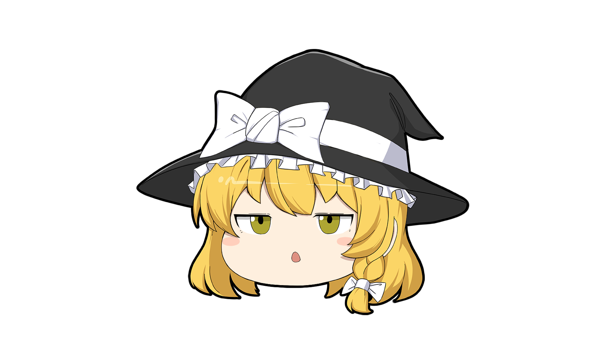
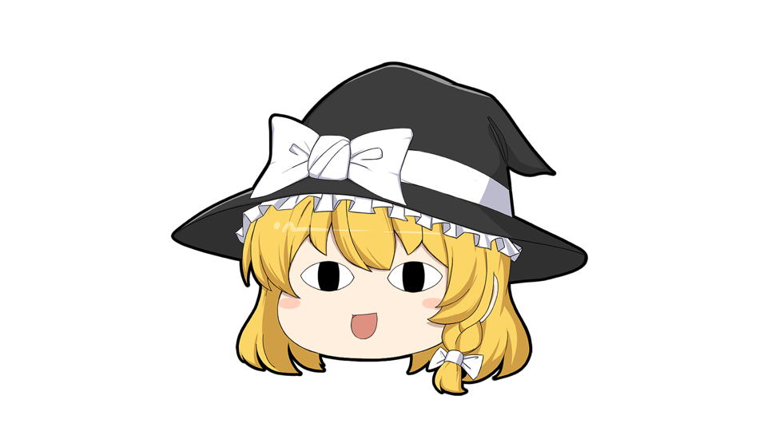
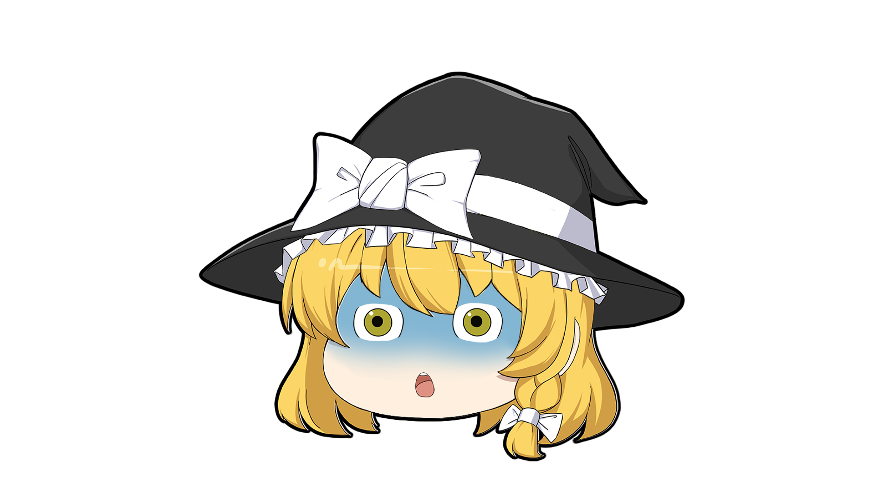

完全無料のゆっくり立ち絵
完全無料で、収益化、商用利用、改変、再配布まで広く許容しています。事前の連絡やライセンスは必要なく、ご自由にお使いいただけます。できるだけ制限なく使える、超フリー素材として公開しています。

たぬき式ゆっくりゆっくり立ち絵素材 配布ページ
ゆっくり解説・実況・配信で使いやすい、オリジナル二次創作立ち絵素材です。
完全無料で配布しており、収益化・商用利用・改変・再配布にも対応しています。
ダウンロード前に、下の利用条件と例外事項を必ず確認してください。
サンプルイメージ
たぬき霊夢


たぬき魔理沙



概要
完全無料で、収益化、商用利用、改変、再配布まで広く許容しています。事前の連絡やライセンスは必要なく、ご自由にお使いいただけます。できるだけ制限なく使える、超フリー素材として公開しています。
YMM4（ゆっくりMovieMaker4）の動く立ち絵を想定し、表情差分あり、動画制作や配信ですぐ使いやすい構成を意識しています。ファイル構成はYMM4向けに最適化されており、ダウンロードしてすぐに立ち絵の「まばたき」「口パク」を設定できます。初心者でも扱いやすい素材を目指して作成しました。
派生素材の制作と配布、新バージョン作成、コミュニティ内での再配布なども歓迎しています。自由に遊ばれ、ゆっくり・ずんだもんなど解説動画文化が広がっていくことが狙いです。
方針
たぬき式ゆっくりは完全自由のフリー立ち絵素材です。ゆっくり動画を作る未成年ユーザー、解説動画を始めたい視聴者、ずんだもんや反応集から入ってきた一般の方まで、誰もが気楽に使える素材を目指して作成しました。
たぬき式ゆっくりはいかなる理由においても、素材の使用料やライセンス料を利用者に請求しません。誰もが自由に安心して動画を作り、ゆっくり解説やずんだもんなど、解説動画の文化が続いていくことを願って素材を公開しました。
たぬき式ゆっくりは素材の改変・派生展開を歓迎します。新しい立ち絵制作、素材改変、ニューたぬき◯◯などの派生展開、コミュニティ内での発展まで含めて広げたい思いで公開しました。常識の範囲内で自由に使ってください。たぬきへの連絡は一切不要です。
収録内容
たぬき霊夢・たぬき魔理沙をまとめた立ち絵素材です。ゆっくりMovieMaker4（YMM4）の動く立ち絵フォーマットに完全対応しており、ダウンロードしてすぐ「まばたき」「口パク」が可能です。収益化/商用利用/素材改変/再配布/高画質化など、常識の範囲ですべて自由にご利用いただけます。完全無料、クレジット・許諾不要です。
ベーシックなオリジナル立ち絵素材です。YMM4の動く立ち絵フォーマットに完全対応しているほか、収益化/商用利用/素材改変/再配布/高画質化など、完全自由・完全無料にてご利用いただけます。
素材の利用条件や注意事項をまとめたファイルです。本素材は超フリー素材ですが、使用前に必ず利用規約を確認する必要があります。立ち絵を利用した時点で、全ての利用条件と注意事項に同意したものとします。
同梱物の見方や補足事項をまとめた案内ファイルです。初回利用時にあわせて確認してください。
利用条件
例外事項
「たぬき霊夢」「たぬき魔理沙」など、東方Project由来キャラクターの素材とその改変素材の利用については、 東方Projectのガイドラインに従う必要があります。
サンプル素材（たぬき式サンプル）およびその改変素材については、基本方針どおり完全自由に使っていただいてかまいません。全てご自身の責任で、かつ自由に遊んでください。
制作者情報
立ち絵のイラストは lilMonster 様に有償依頼でゼロから制作いただきました。作成工程において生成AIは一切使用していません。
更新履歴
2026年3月16日: たぬき式ゆっくりの配布を開始しました。
よくある質問
できます。収益化動画、商用利用、制作発注、制作受注、改変素材の販売まで完全自由に使用可能です。
不要です。ただし入れていただけるとたぬきが喜びます。「たぬき式ゆっくり: https://tanukiyukkuri.github.io/tanukitachie/」の形式を推奨します。
できます。改変、再配布、派生素材制作、改変素材の販売まで広く許容しています。常識の範囲で楽しみましょう。
大丈夫です。たぬき式ゆっくりからの許可は不要です。ただし他人が改変・制作した素材については、その配布者や制作者の方針を必ず確認してください。たぬき式ゆっくり本体は派生素材や再配布を歓迎していますが、個別の改変素材については配布元の条件を優先してください。
大丈夫です。完全自由です。動画、配信、サムネイルなどで使いやすいよう自由に加工してください。
大丈夫です。完全自由です。動画や配信に限らず、サムネイル、Webページ、アプリ、書籍などにも自由に使って構いません。関連する権利者様への確認はご自身で必ず行ってください。
大丈夫です。完全自由です。規約とREADMEを確認したうえで、ご自身で判断してください。自由に使える素材ですが、最終的な判断はご自身でお願いします。
大丈夫です。サンプル素材を使った新しいたぬき式ゆっくり素材や派生展開も歓迎しています。ただし、版権作品の二次創作として制作する場合は、元になっている一次作品のガイドラインや権利関係を各自で確認し、尊重してください。そうした利用や公開に関する最終的な判断と責任は使用者にあります。
ありません。現在、対応の予定はありませんが、自由に作成・再配布いただいて大丈夫です。念のため「たぬき式ゆっくり: https://tanukiyukkuri.github.io/tanukitachie/」のクレジットを入れておくと安心です。どこかでご共有いただければ、このページで配布するかもしれません。
対応の予定はありませんが、対応版を自由に作成・再配布いただいて大丈夫です。念のため「たぬき式ゆっくり: https://tanukiyukkuri.github.io/tanukitachie/」のクレジットを入れておくと安心です。どこかでご共有いただければ、このページで配布するかもしれません。
そういうのは堂々とやらずに、運営や一般の人に見つからないよう、こっそりやるものです。
できません。たぬきは個別サポートや問い合わせ対応を行いません。READMEと利用規約を確認のうえ自己判断で利用してください。
いいえ、自由ではありません。「たぬき式ゆっくり」については自由に使っていただく想定ですが、「たぬき霊夢」「たぬき魔理沙」など東方Projectの二次創作素材については、利用にあたって東方Projectのガイドラインにも従っていただく必要があります。ガイドラインの範囲で自由にお楽しみください。
ダウンロード
完全無料、収益化OK、商用利用OK、改変OK、再配布OK。READMEと利用規約を確認のうえ、自由に遊んでください。
スポンサー募集中
たぬき式ゆっくりのページ維持、コミュニティ運営などを支えてくださるサポーターを募集しています。